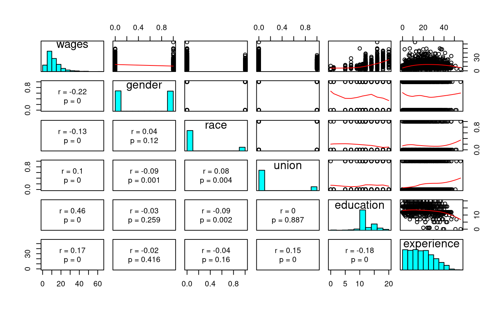
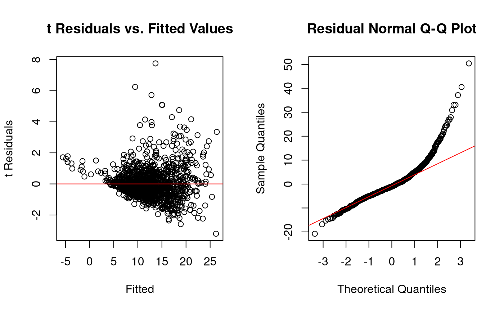

vignettes/tests/test-linreg-estimation-linreg.Rmd
test-linreg-estimation-linreg.Rmd# The Linear Regression Model {#linreg-estimation-linreg-example}See jeksterslabRdatarepo::wages() for the data set used in this example.
X <- jeksterslabRdatarepo::wages.matrix[["X"]] X <- X[, -ncol(X)] y <- jeksterslabRdatarepo::wages.matrix[["y"]] head(X) #> constant gender race union education experience #> [1,] 1 1 0 0 12 20 #> [2,] 1 0 0 0 9 9 #> [3,] 1 0 0 0 16 15 #> [4,] 1 0 1 1 14 38 #> [5,] 1 1 1 0 16 19 #> [6,] 1 1 0 0 12 4 head(y) #> wages #> [1,] 11.55 #> [2,] 5.00 #> [3,] 12.00 #> [4,] 7.00 #> [5,] 21.15 #> [6,] 6.92
jeksterslabRlinreg::linreg()
result_linreg <- linreg( X = X, y = y ) #> #> ANOVA Table: #> df SS MS F p #> Model 5 25967.28 5193.45611 122.6149 3.453144e-106 #> Error 1283 54342.54 42.35584 NA NA #> Total 1288 80309.82 NA NA NA #> #> Coefficients: #> coef se t p std. coef #> Intercept -7.1833382 1.01578786 -7.071691 2.508276e-12 0.00000000 #> gender -3.0748755 0.36461621 -8.433184 8.939416e-17 -0.19477502 #> race -1.5653133 0.50918754 -3.074139 2.155664e-03 -0.07135673 #> union 1.0959758 0.50607809 2.165626 3.052356e-02 0.05077872 #> education 1.3703010 0.06590421 20.792312 5.507605e-83 0.48829962 #> experience 0.1666065 0.01604756 10.382050 2.659960e-24 0.24607631 #> #> Confidence Intervals: #> ci_0.05 ci_0.5 ci_2.5 ci_97.5 ci_99.5 ci_99.95 #> Intercept -10.5335348 -9.8037324 -9.1761258 -5.1905507 -4.5629441 -3.8331417 #> gender -4.2774257 -4.0154638 -3.7901849 -2.3595660 -2.1342872 -1.8723252 #> race -3.2446781 -2.8788475 -2.5642449 -0.5663817 -0.2517792 0.1140514 #> union -0.5731336 -0.2095371 0.1031443 2.0888072 2.4014886 2.7650852 #> education 1.1529406 1.2002901 1.2410091 1.4995928 1.5403119 1.5876614 #> experience 0.1136797 0.1252092 0.1351242 0.1980889 0.2080039 0.2195334 #> #> Means and Standard Deviations: #> Mean SD #> wages 12.3658495 7.8963503 #> gender 0.4972847 0.5001867 #> race 0.1528317 0.3599648 #> union 0.1590380 0.3658535 #> education 13.1450737 2.8138234 #> experience 18.7897595 11.6628366

lm() functionlmobj <- lm( wages ~ gender + race + union + education + experience, data = jeksterslabRdatarepo::wages ) lm_betahat <- as.vector(coef(lmobj)) lm_yhat <- as.vector(predict(lmobj)) lm_epsilonhat <- as.vector(residuals(lmobj)) lm_anova <- anova(lmobj) lm_RSS <- lm_anova["Residuals", "Sum Sq"] lm_TSS <- sum(lm_anova[["Sum Sq"]]) lm_ESS <- lm_TSS - lm_RSS lm_R2 <- summary(lmobj)$r.squared lm_Rbar2 <- summary(lmobj)$adj.r.squared lm_vcov <- as.vector(vcov(lmobj)) lm_se <- as.vector(sqrt(diag(vcov(lmobj)))) lm_coef <- summary(lmobj)[["coefficients"]][, "Estimate"] lm_se <- summary(lmobj)[["coefficients"]][, "Std. Error"] lm_t <- summary(lmobj)[["coefficients"]][, "t value"] lm_p <- summary(lmobj)[["coefficients"]][, "Pr(>|t|)"] summary(lmobj) #> #> Call: #> lm(formula = wages ~ gender + race + union + education + experience, #> data = jeksterslabRdatarepo::wages) #> #> Residuals: #> Min 1Q Median 3Q Max #> -20.781 -3.760 -1.044 2.418 50.414 #> #> Coefficients: #> Estimate Std. Error t value Pr(>|t|) #> (Intercept) -7.18334 1.01579 -7.072 2.51e-12 *** #> gender -3.07488 0.36462 -8.433 < 2e-16 *** #> race -1.56531 0.50919 -3.074 0.00216 ** #> union 1.09598 0.50608 2.166 0.03052 * #> education 1.37030 0.06590 20.792 < 2e-16 *** #> experience 0.16661 0.01605 10.382 < 2e-16 *** #> --- #> Signif. codes: 0 '***' 0.001 '**' 0.01 '*' 0.05 '.' 0.1 ' ' 1 #> #> Residual standard error: 6.508 on 1283 degrees of freedom #> Multiple R-squared: 0.3233, Adjusted R-squared: 0.3207 #> F-statistic: 122.6 on 5 and 1283 DF, p-value: < 2.2e-16
context("Test linreg-estimation-linreg") result_betahat <- as.vector(result_linreg[["betahat"]]) result_yhat <- as.vector(result_linreg[["yhat"]]) result_epsilonhat <- as.vector(result_linreg[["epsilonhat"]]) result_RSS <- result_linreg[["RSS"]] result_ESS <- result_linreg[["ESS"]] result_TSS <- result_linreg[["TSS"]] result_R2 <- result_linreg[["R2"]] result_Rbar2 <- result_linreg[["Rbar2"]] result_vcov <- as.vector(result_linreg[["vcov"]]) result_vcovbiased <- as.vector(result_linreg[["vcovbiased"]]) result_se <- as.vector(result_linreg[["se"]]) result_sebiased <- as.vector(result_linreg[["sebiased"]]) result_t <- as.vector(result_linreg[["t"]]) result_p <- as.vector(result_linreg[["pt"]]) test_that("betahat.", { expect_equivalent( length(result_betahat), length(lm_betahat) ) for (i in seq_along(result_betahat)) { expect_equivalent( result_betahat[i], lm_betahat[i] ) } }) test_that("yhat.", { expect_equivalent( length(result_yhat), length(lm_yhat) ) for (i in seq_along(result_yhat)) { expect_equivalent( result_yhat[i], lm_yhat[i] ) } }) test_that("epsilonhat.", { expect_equivalent( length(result_epsilonhat), length(lm_epsilonhat) ) for (i in seq_along(result_epsilonhat)) { expect_equivalent( result_epsilonhat[i], lm_epsilonhat[i] ) } }) test_that("RSS", { expect_equivalent( lm_RSS, result_RSS ) }) test_that("ESS", { expect_equivalent( lm_ESS, result_ESS ) }) test_that("TSS", { expect_equivalent( lm_TSS, result_TSS ) }) test_that("R2", { expect_equivalent( lm_R2, result_R2 ) }) test_that("Rbar2", { expect_equivalent( lm_Rbar2, result_Rbar2 ) }) test_that("vcov", { for (i in 1:length(lm_vcov)) { expect_equivalent( result_vcov[i], lm_vcov[i] ) } }) test_that("vcovbiased", { for (i in 1:length(lm_vcov)) { expect_equivalent( round(result_vcovbiased[i], digits = 1), round(lm_vcov[i], digits = 1) ) } }) test_that("se", { for (i in 1:length(lm_se)) { expect_equivalent( result_se[i], lm_se[i] ) } }) test_that("sebiased", { for (i in 1:length(lm_se)) { expect_equivalent( round(result_sebiased[i], digits = 1), round(lm_se[i], digits = 1) ) } }) test_that("t.", { expect_equivalent( length(lm_t), length(result_t) ) for (i in seq_along(result_t)) { expect_equivalent( result_t[i], lm_t[i] ) } }) test_that("p.", { expect_equivalent( length(lm_p), length(result_p) ) for (i in seq_along(result_p)) { expect_equivalent( result_p[i], lm_p[i] ) } })
#>
#> ANOVA Table:
#> df SS MS F p
#> Model 5 25967.28 5193.45611 122.6149 3.453144e-106
#> Error 1283 54342.54 42.35584 NA NA
#> Total 1288 80309.82 NA NA NA
#>
#> Coefficients:
#> Biased standard errors are used.
#> coef se t p std. coef
#> Intercept -7.1833382 1.01342097 -7.088208 2.236468e-12 0.00000000
#> gender -3.0748755 0.36376661 -8.452880 7.620029e-17 -0.19477502
#> race -1.5653133 0.50800108 -3.081319 2.104728e-03 -0.07135673
#> union 1.0959758 0.50489888 2.170684 3.013798e-02 0.05077872
#> education 1.3703010 0.06575065 20.840873 2.582448e-83 0.48829962
#> experience 0.1666065 0.01601016 10.406297 2.103790e-24 0.24607631
#>
#> Confidence Intervals:
#> ci_0.05 ci_0.5 ci_2.5 ci_97.5 ci_99.5 ci_99.95
#> Intercept -10.5257285 -9.7976266 -9.1714824 -5.1951941 -4.5690499 -3.8409480
#> gender -4.2746237 -4.0132721 -3.7885182 -2.3612328 -2.1364788 -1.8751273
#> race -3.2407650 -2.8757868 -2.5619173 -0.5687093 -0.2548398 0.1101384
#> union -0.5692445 -0.2064951 0.1054577 2.0864938 2.3984466 2.7611960
#> education 1.1534470 1.2006862 1.2413104 1.4992916 1.5399157 1.5871549
#> experience 0.1138030 0.1253056 0.1351976 0.1980155 0.2079074 0.2194101
#>
#> Means and Standard Deviations:
#> Mean SD
#> wages 12.3658495 7.8963503
#> gender 0.4972847 0.5001867
#> race 0.1528317 0.3599648
#> union 0.1590380 0.3658535
#> education 13.1450737 2.8138234
#> experience 18.7897595 11.6628366